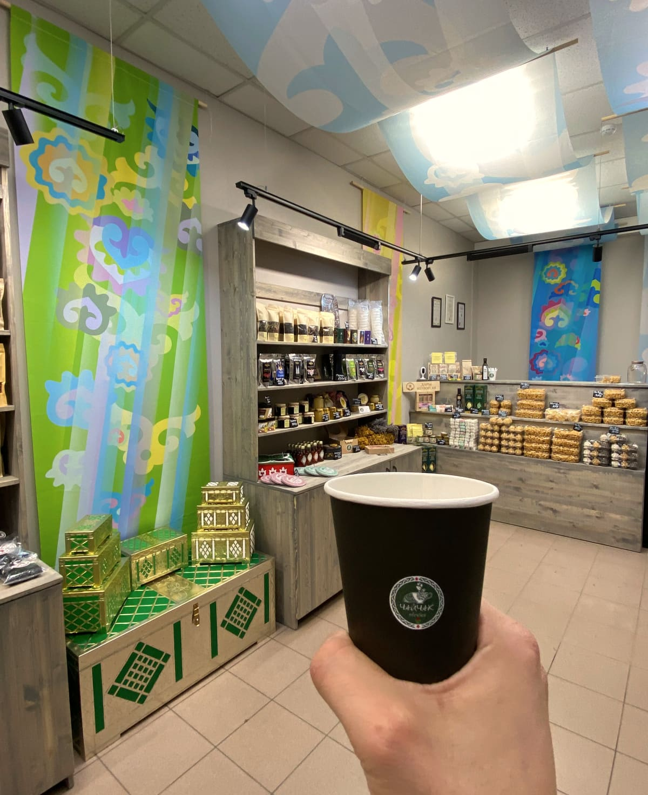
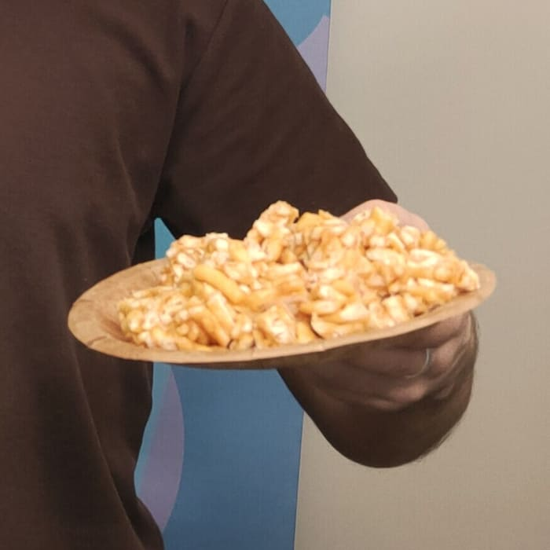
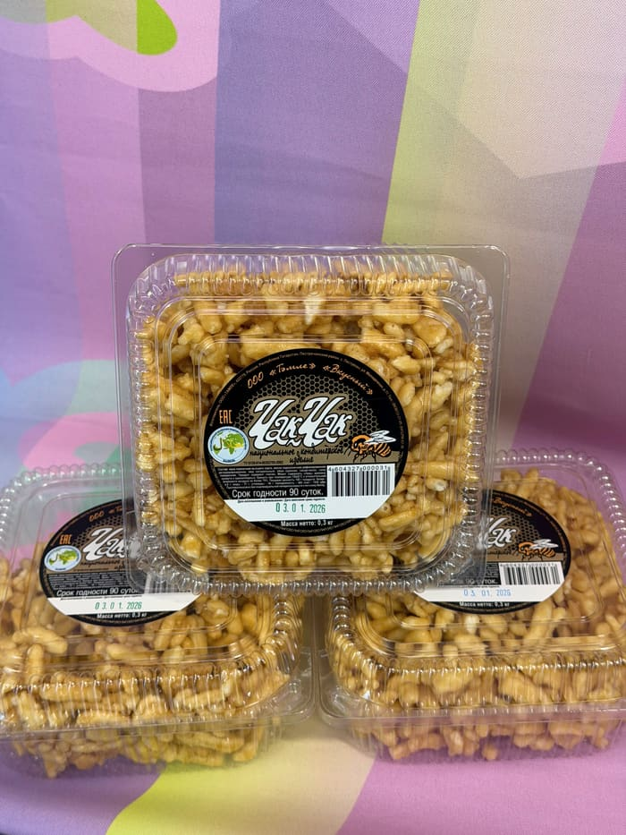
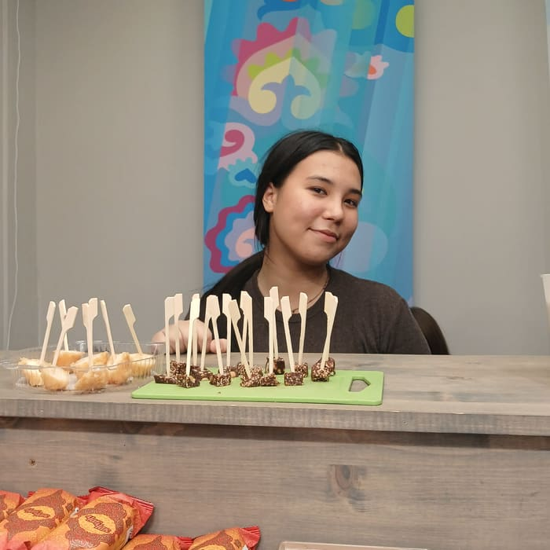
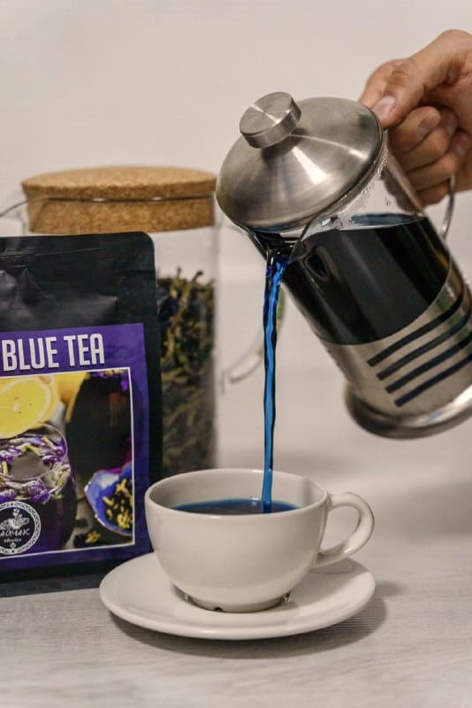
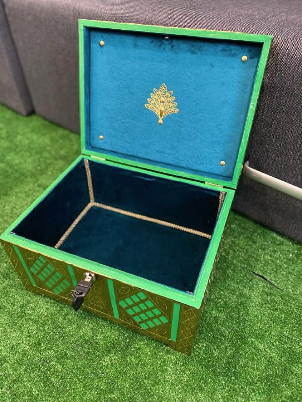
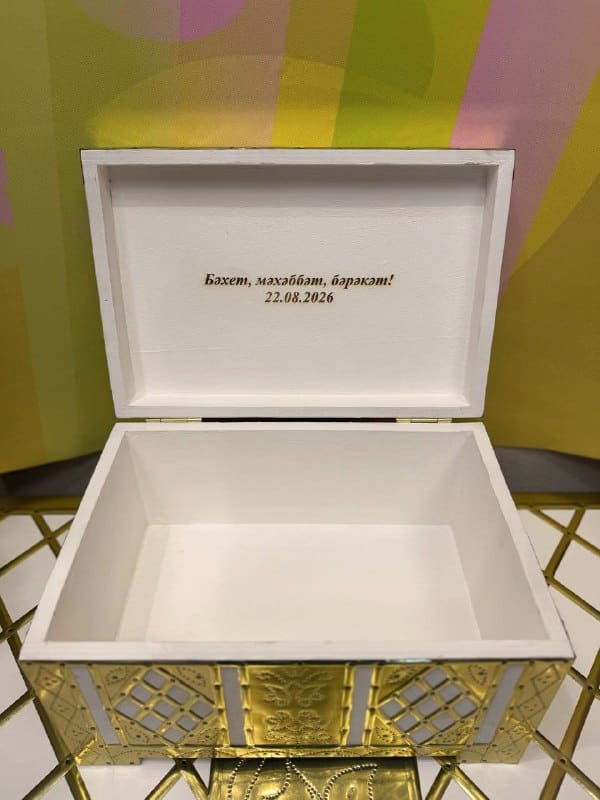
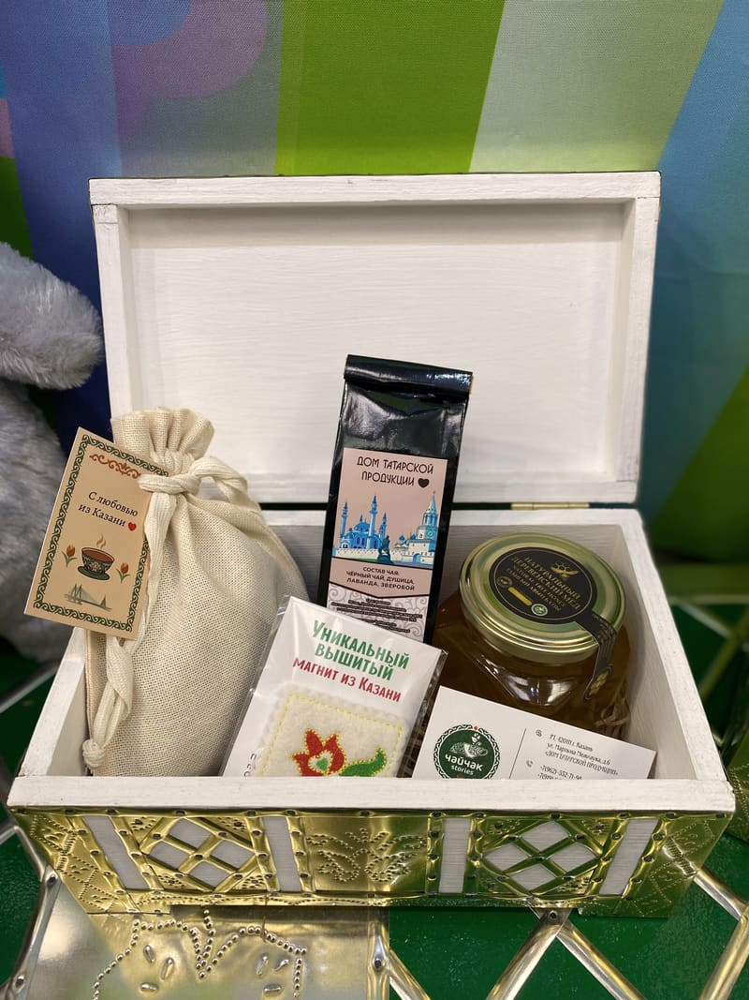
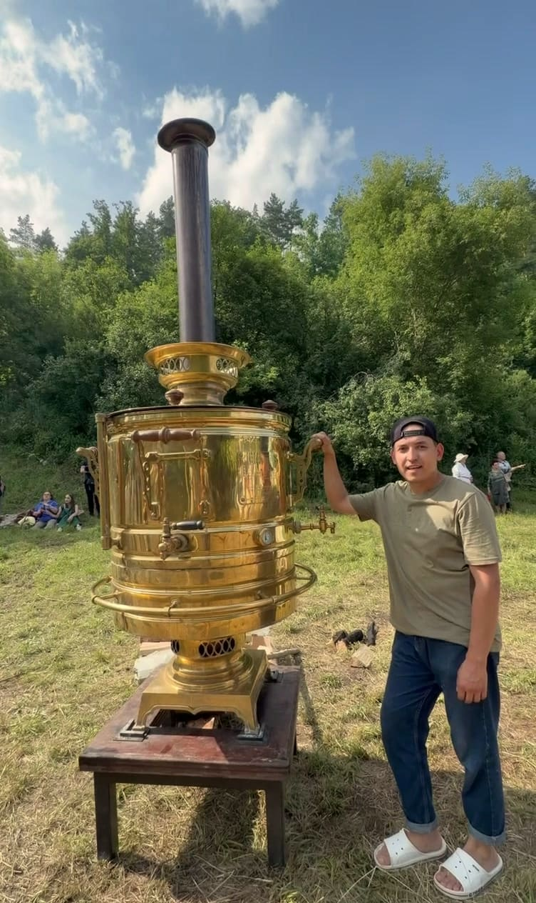

Чәй
Чай наливаем каждому, кто зашёл.
Не нужно ничего покупать, чтобы присесть.
пн–сб 09:00–19:00
WhatsAppРәхим итегез!
Добро пожаловать · Казань · Мартына Межлаука, 6
ЧайЧак stories — дом татарской продукции в центре Казани. Каждого, кто заходит, у нас встречают горячим чаем и свежим чак-чаком.
Пн–сб 09:00–19:00 · вс 10:00–18:00

листайте — нальём
Чәй
Не нужно ничего покупать, чтобы присесть.
Второй глоток
Так принято в татарском доме. А какой пить — подскажем.
Третий глоток
Попробуйте прежде, чем выбрать.
Так у нас начинается каждый визит. Дальше — как пойдёт разговор.

Тәмле булсын!
Классический — на мёду, как в детстве у бабушки. И шоколадный — для тех, кто думает, что знает чак-чак. Дадим попробовать оба.


шоколадный — сюрприз даже для казанцев
Дегустация — каждому гостю · Халяль · Доставка
Чәй
Собственное производство чайной продукции и купажи с фруктами и травами. Не знаете, что выбрать, — расскажем и нальём попробовать.
крепкий, тот самый, с молоком
светлый и свежий, пьют без молока
между зелёным и чёрным — раскрывается не с первой заварки
для вечера и неспешного разговора
ягоды и фрукты в заварке — и горячим, и остывшим
из цветов анчана — и с фокусом, о нём ниже
Синий чай из Таиланда
Его цвет дают цветы клитории. А теперь — фокус:
Кислота меняет цвет — это настоящая химия, никаких красителей. Попробуйте дома.

Түр — почётное место в доме
Сандык элек һәр татар өенең түрендә торган…
Сундук издавна стоял на почётном месте в каждом татарском доме.
Эксклюзивные татарские сундуки разных размеров. Гравируем по индивидуальному эскизу — имя, дата, логотип компании. Внутрь — чай, чак-чак, мёд. Получается подарок, который не выбросят.



Иллюстрация: татарский сундук в золотистой отделке с зелёными ромбами; на передней планке — ваша гравировка.
спросите про корпоративные — сделаем с логотипом
Күчтәнәч
По-татарски из поездки без күчтәнәча не возвращаются.
Подарочная упаковкаСертификатыДоставкаХаляль
Не зря же мы так называемся.
← → листать · пробел — пауза · удержание — тоже пауза
Табын
Чайный кейтеринг и выездная печь-блинница для городских праздников, корпоративов и фестивалей.
600кг
гречки с тушёнкой
500л
чая
1 400+
порций блинов
Столько мы приготовили для одного городского праздника.

12.07.2026 · самовар «Гигант»
Угощали гостей праздника травяным чаем.
Корпоративные подарки — тоже к нам.
Рәхмәт!
«Приехали с Чебоксар ради чак-чака. Всё отлично.»Игорь
«Всех посетителей угощают горячим вкусным татарским чаем.»Алина
«Купила татарский чай, попала на дегустацию вкусного шоколадного чак-чака!»Аида
«Приятный персонал, который накормил чак-чаком и напоил очень вкусным чаем!»Елизавета
«Маленький уютный магазинчик, звучит приятная музыка, богатый ассортимент национальной продукции.»Надежда
«Чак-чак всегда свежий»
гость, май 2025«Очень колоритное место! Вкусный чай и чак-чак!»
Надежда«Помогли подобрать подарок»
Эмиль«Красивые наборы и чаи в ассортименте, чак-чак шоколадный даже есть»
гость«Свежий чак-чак, ещё дали попробовать!»
Варвара«Звучит приятная музыка»
Надежда«Всех посетителей угощают горячим чаем»
Алинаул. Мартына Межлаука, 6Казань
| Пн–сб | 09:00–19:00 |
|---|---|
| Вс | 10:00–18:00 |
Пн–сб 09:00–19:00 · вс 10:00–18:00
+7 950 323-72-89консультации и кейтеринг +7 962 552-71-98WhatsApp
Мы здесь